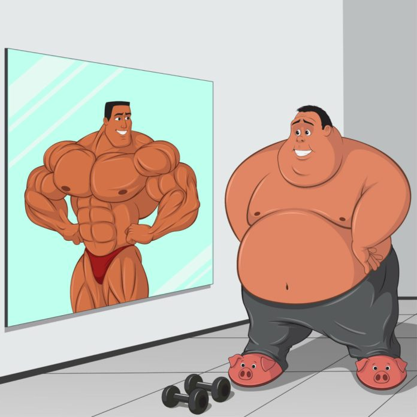

Ешьте что хотите, наслаждайтесь едой и оставайтесь стройным — это вам гарантирует уникальный и эффективный метод Аллена Карра. Сбросьте вес без диет, подсчета калорий и применения силы воли. Программа питания, разработанная Алленом Карром, позволит вам наслаждаться вкусом еды, утолять голод и терять вес. Благодаря этой программе вы сможете:
— есть любимые продукты и блюда;
— следовать своим привычкам;
— избегать угрызений совести;
— наслаждаться вкусом свежей пищи;
— избавиться от болезней органов пищеварения;
— изучить собственные пристрастия и открыть для себя новые вкусы;
— доверять своему аппетиту.